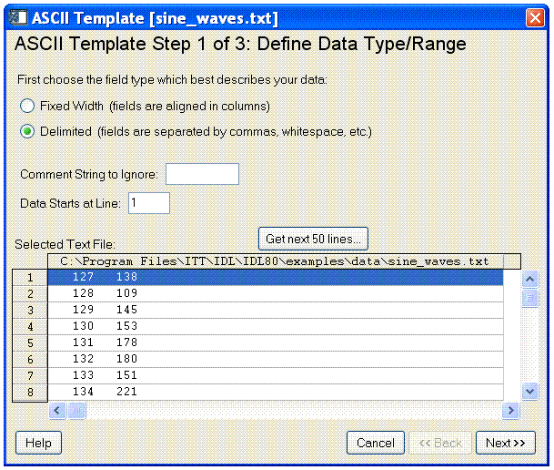
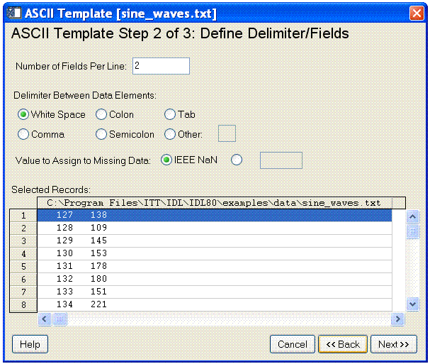
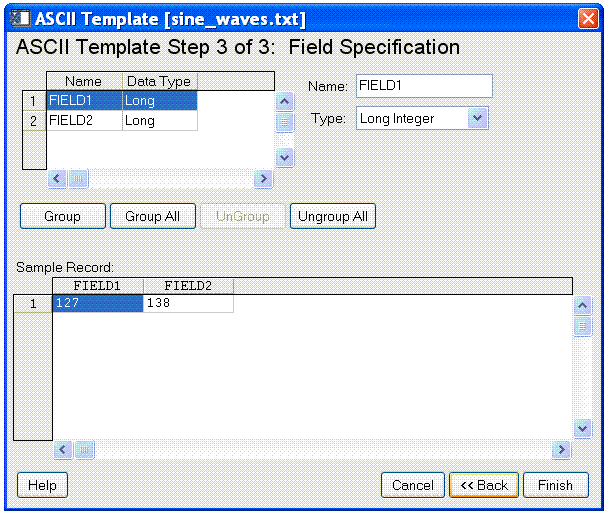
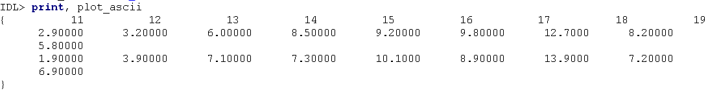

The ASCII_TEMPLATE function presents a graphical user interface (GUI) which generates a template defining an ASCII file format. Templates are IDL structure variables that may be used when reading ASCII files with the READ_ASCII routine. See READ_ASCII for details on reading ASCII files.
This routine is written in the IDL language. Its source code can be found in the file ascii_template.pro in the lib subdirectory of the IDL distribution.
Note: If you want to view a text file in an existing project, simply drag it from the Project Explorer and drop it on an Editor. The file will open in a new Editor tab.
Result = ASCII_TEMPLATE( [Filename] [, BROWSE_LINES=lines] [, CANCEL=variable] [, GROUP=widget_id] )
Returns a template defining an ASCII file format.
A string containing the name of a file to base the template on. If Filename is not specified, a dialog allows you to choose a file.
Set this keyword equal to the number of lines that will be read in at a time when the “Browse” button is selected. The default is 50 lines.
Set this keyword to a named variable that will contain the byte value 1 if the user clicked the “Cancel” button, or 0 otherwise.
The widget ID of an existing widget that serves as “group leader” for the ASCII_TEMPLATE graphical user interface. When a group leader is killed, for any reason, all widgets in the group are also destroyed.
Use the following command to generate a template structure from the file “myFile”:
myTemplate = ASCII_TEMPLATE(myFile)
Note: If no filename is supplied in the call to the ASCII_TEMPLATE function, a file selection dialog is displayed prior to the first ASCII_TEMPLATE screen.
The ASCII_TEMPLATE function lets you describe the data organization of an ASCII file and generates a template that describes how to correctly import the ASCII data. The READ_ASCII function accesses the data in an ASCII file, using the template to determine how to import the data correctly. (You only have to explicitly call READ_ASCII when you call ASCII_TEMPLATE from the command line. When you start the ASCII Template dialog from an iTool or the workbench, the READ_ASCII routine is called for you.) The template is an IDL variable that you can use to read other files with the same organization.
Note: At any time you are in the ASCII_TEMPLATE dialog and you want to view your data in the Workbench Editor, click the Open in Editor button.
After starting the ASCII Template dialog, complete the following steps to create the template:
| 1. | Select the ASCII file. In the Select File to Open dialog, select sine_waves.txt from the examples\data subdirectory of your IDL distribution. The ASCII Template window is displayed. |
|
 |
| 2. | Define ASCII data type and range. |
For this data set, make sure the following options are selected:
| • | Field Type of Delimited |
| • | Comment String to Ignore is blank as there are no file comments |
| • | Data Starts at Line value of 1 |
The following table describes each of these options.
|
Field Type |
Choose from fixed width or delimited. |
|
Comment String to Ignore |
Enter any character that indicates text sections to ignore. |
|
Data Starts at Line |
Enter the line number containing the first line of data to be read. |
|
Selected Text File |
Shows the real data from the selected text file. The option is also given to Get next 50 Lines. |
| 3. | Click Next. The second ASCII_TEMPLATE dialog screen appears: |
|
 |
| 4. | Define ASCII data field characteristics. For this data set, select the following options: |
| • | Number of Fields Per Line equals 2 |
| • | Delimiter Between Data Elements equals White space |
| • | Value to Assign to Missing Data option is IEEE NaN |
| • | Selected Records shows data in the file. |
The following table describes each of these options:
|
Number of Fields Per Line |
Specify how many fields should appear per line. |
|
Delimiter Between Data Elements |
Define the delimiter type between data elements. Note - If you selected a Field Type of Fixed Width on the previous dialog screen, this field is not visible. |
|
Value to Assign Missing Data |
Choose a value to assign any missing data. Select IEEE Nan or define a custom value. |
|
Selected Records |
Shows the data itself in its desired column-delimited format. |
| 5. | Click Next. The third ASCII_TEMPLATE dialog screen appears: |
|
 |
| 6. | Specify field characteristics. For this data set, define the following: |
| • | Name Field1SmoothSine and Field2NoisySine by selecting each field and entering the names in the Name field. The Type fields are correct and do not need to be changed. |
| • | Accept the default Grouping (none). |
The following table describes each of these options:
|
Name |
Allows you to name your fields. Default values are Field1, Field2, and so on. You can enter the name into the Name field to the right. |
|
Data Type |
Allows you to set the data type for your fields. You can enter a different type by selecting it from the Type drop-down menu. |
|
Location |
Allows you to specify the starting location (in columns) for each field when using fixed width fields. You can enter a new value in the Column field to the right. (The Location table column and Column text field only appear when using fixed width fields. |
|
Grouping |
Lets you join selected fields into a single field that is to be manipulated or displayed as a group. The default is no grouping. |
|
Selected Records |
Shows a sample of the data with your defined configuration parameters. |
| 7. | Create the template. Click Finish. |
The result of these actions depends on the location from which you launched the ASCII Template dialog. The READ_ASCII function, which reads data from a file according to the template specification, is automatically called when you access the ASCII Template dialog from iTools. From the command line, you must explicitly read the ASCII data with the template specification. After defining the structure of your ASCII data using the ASCII Template dialog, refer to the appropriate section:
| • | iTools ASCII data access — the ASCII data is read and placed in the Data Manager. You can display single or multiple fields of the data using the Insert Visualization dialog. |
| • | IOPEN ASCII data access — when you call IOPEN with an ASCII data file, the ASCII Template dialog is invoked. After you have defined the ASCII data file structure through the dialog, the IOPEN procedure opens the file, reads the ASCII data from it, and adds one or more variables containing the data to IDL's current scope. |
| • | Command line ASCII data access — the template is a structure defining the format of the ASCII data. Access the data using READ_ASCII, and specify the template (or other characteristics) as parameters of the data access operation. See Working with a READ_ASCII Data Structure for details. |
When importing an ASCII data file into IDL, you must first describe the format of the data using the interactive ASCII_TEMPLATE function. If you have a number of ASCII files that have the same format, you can create and save a customized ASCII template using the SAVE procedure. After creating a SAVE file of your custom template, you can avoid having to repeatedly define the same fields and records when reading in ASCII files that have the same structure.
| 1. | At the IDL command line, enter the following to create the variable plotTemplate, which will contain your custom ASCII template: |
plotTemplate = ASCII_TEMPLATE( )
A dialog box appears, prompting you to select a file.
| 2. | Select the plot.txt file in the examples/data subdirectory of the IDL distribution. |
| 3. | After selecting the file, the Define Data Type/Range dialog appears. First, choose the field type. Since the data file is delimited by tabs (or whitespace) select the Delimited button. In the Data Starts at Line field, specify to begin reading the data at line 3, not line 1, since there are two comment lines at the beginning of the file. Click Next to continue. |
| 4. | In the Define Delimiter/Fields dialog box, select Tab as the delimiter between data elements since it is known that tabs were used in the original file. Click Next. |
| 5. | In the Field Specification dialog box, name each field as follows: |
| • | Click on the first row (row 1). In the Name field, enter time. |
| • | Select the second row and enter temperature1. |
| • | Select the third row and enter temperature2. |
| 6. | Click Finish. |
| 7. | Type the following line at the IDL command line to read in the plot.txt file using the custom template, plotTemplate: |
PLOT_ASCII = READ_ASCII(FILEPATH('plot.txt', SUBDIRECTORY = $
['examples', 'data']), TEMPLATE = plotTemplate)
| 8. | Enter the following line to print the plot.txt file data: |
PRINT, PLOT_ASCII
The file contents are printed in the IDL console. Your output will resemble the following display.
|
 |
| 9. | Create a SAVE file of your custom template by entering the following: |
SAVE, plotTemplate, FILENAME='myPlotTemplate.sav'
| 10. | To restore the template so that you can read another ASCII file, enter: |
RESTORE, 'myPlotTemplate.sav'
This file contains your custom ASCII template information stored in the structure variable, plotTemplate.
Note: If you are attempting to restore a file that is not in your current working directory, you will need to specify a path to the file.
| 11. | After restoring your custom template, you can read another ASCII file that is delimited in the same way as the original file by using the READ_ASCII function and specifying plotTemplate for the TEMPLATE: |
PLOT_ASCII = READ_ASCII(FILEPATH('plot.txt', $
SUBDIRECTORY = ['examples', 'data']), $
TEMPLATE = plotTemplate)
| 12. | Enter the following to display the contents of the file using the customized ASCII template structure previously defined using the dialog. |
PRINT, PLOT_ASCII
|
5.0 |
Introduced |
|
7.1 |
Added the Open in Editor and Help buttons. |